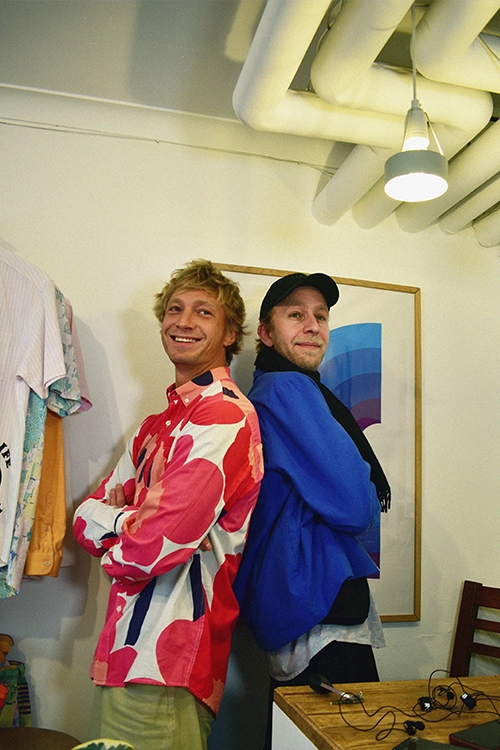
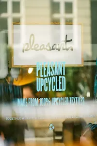
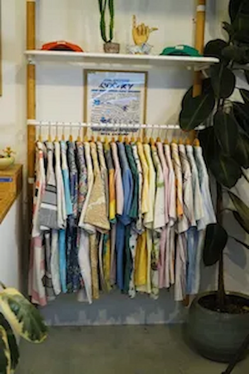
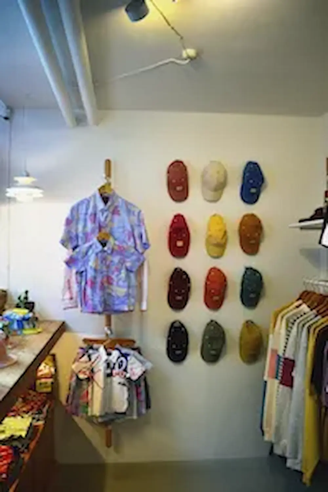
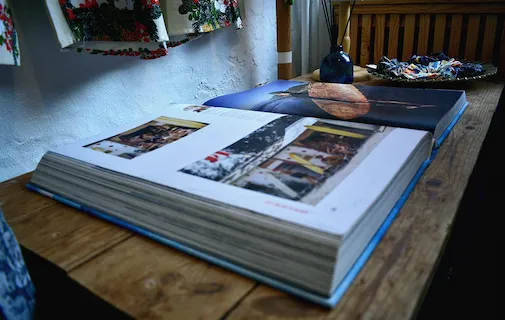
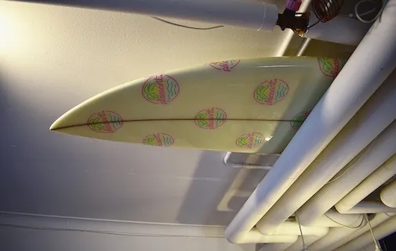
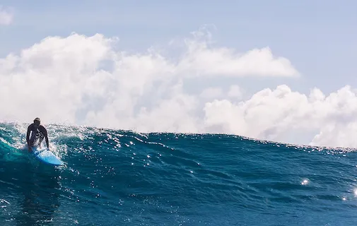
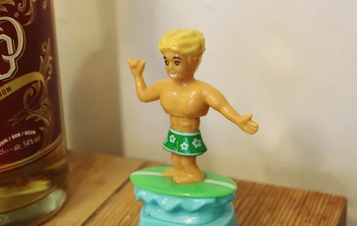

Pleasant Stories
About Pleasant
Pleasant er et ældre tøjmærke efterhånden. Det har eksisteret i 12 år. Vi
startede Pleasant og fik den
her butik ret tidligt og fik fundament, base og kundegruppe for vores virksomhed, og dyrkede det i mange
år. Kørte kommercielt med hurtige kollektioner og udsalg. Pleasant er nu noget andet. Vi lavede en
transition for 4 år siden, hvor vi besluttede os for at lave tøj på en anderledes måde hvor vi havde
vores værdier med på et forretningsplan og ligesom udviklede den til et punkt hvor vi er tilfredse med
at drive virksomhed og have et brand og er stolte af det. Pleasant er også et ældre brand, men også
noget der har eksisteret i flere forskellige formater.

Cirkulært
Man skal tænke ”hvis jeg producerer den her ting som et gardin,
så kan Pleasant godt
bruge det her selvom
det ikke længere er et gardin, og så få noget andet ud af det og skabe ny værdi. Så man tænker cirkulært
om
de ressourcer vi udvinder fra jorden.



Det der med at vi er stoppet med at bruge ”virgin textile”, betyder så bare at vi
overhovedet ikke har kontakt til bomuldsproducenter, og alt det vand det bruger og alle de kemikalier
det bruger, og hvor meget biodiversitet det ødelægger ift. at man skal udrydde naturen for at kunne
dyrke de her fucking marker. Det har vi taget afstand fra og det føles sindssygt godt. Det betyder at
når vi laver et nyt produkt i ser i butikken, eller den her jakke, så bærer vi også vores værdier på os,
altså en etik og en moral
Livets glæder og natur




Glæden og kærligheden til livet, og til mennesker og naturen. Det er jeg
stor
fan af, af livet og at leve, og at få det til at være så glædeligt og lykkeligt som muligt. Der
synes
jeg der er så mange positive og gode ting som er værd at italesætte og bevare og bruge tid på. Det
billede prøver vi at kommunikere lidt – de simple glæder og de lavtudledende glæder. Det
lavtudledende
luksus. Det vil jeg sige er en god ting at være i. Man kan ikke bare stå og kigge på forurening og
synes
det er hårdt, det knækker man på. Det er en balancegang, hvor man er nødt til at være pumpet op med
god
energi også. Så livet er en kæmpe inspiration og glæde, og noget der gør at vi har det godt med at
kæmpe
med det her og arbejde med det her.